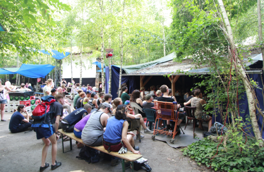
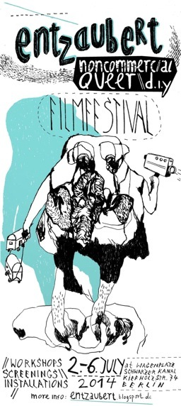

1. Narrative structure (1st turning point, 2st turning point, conflict, exposition of main char + background queer + diy: dev smth new, support w existing mdls of myth&storytelling, metamorphosis of the hero) 2. char building 3. going deeper into
transgression
queer aesthetics – creative power of chaos, transgressing already existing models/programs what’s the differenece between exing programmed and transgressed model? karakteri ID, creating other chars how to develop experiences into chars, creating IDs
what kind of love story is the best for our subject?
2. Concept
apply / to explore: letting go of ownership, jealousy; understanding more complicated social structures; eliminating or widening categories)
Polyamory as a possibility of transgression, from old system to new. (Emotions / social situations that
Themes
affectconceptpercept in art).
Technical device: Polyamory as a nonlinear model of narrative in film. Situations, dialogue
Polyamory Love story as model for developing nonlinear narrative structure
3. empathy, social and personal enlightenment, perfect verbal communication, perfect nonverbal
communication, the struggle of letting go of jealousy, different sexualities etc
polyamory (in contrast to fir ex. polygamy) is not a (or not only) social model of relations, but a much more
complicated fusion of practices: from corporal/sexual, through linguistic to political, but always with affect as
a major theme. That's why I think it's so interesting for film workshops (question: how to transform
keeping it a bit narrower than just "queer experience", but still including variations on human communication in the term,
The Polyamorous Experience: Film Script Writing Workshop
In writing this sort of script multiple and hybrid identities can be a point of departure for character building
and creating relations between characters in the film
Intimate and personal experience would be a ground for queer experience encoded later in the script. This
work involves analysis of structural elements of the story: characters as well as actions.
Searching for visual form which is the most interesting for pictorial space in the queer movie making, we
will consider this problem at the very primal stage of script writing
From concept to scenario: creative process and working with singularity, collecting and crystalizing the
materials for the script
Imagining the space: ...
I would like to keep the exercises and practices of the workshop itself quite simple to not overwhelm the
participants with theory. So hopefully we can derivate these ideas into simple tasks & questions. But these
details don't have to be in the concept, we can work on them later.
Queer dialogs: ...is about different voices that the writer has to hear when creating this kind of script. (this
is also a matter of transgression, but in this case transgressing one's identity phantasms. Anyway, we'll see
how this concepts work in practice during the workshop. And first in the scenario of the workshops we want
to design.)
THE POLYAMOROUS EXPERIENCE: FILM SCRIPT WRITING WORKSHOP
The Polyamorous Experience: Film Script Writing Workshop3 day workshop à 3 hours:thursday 3. Julyfriday 4. Julysaturday 5. July12 – 15:00Studio space, Karpfenteichstrasse
*workshop will be in english language*Limited participants. Please register by sending an email to:piret.karro@gmail.com
Workshop facilitators: Piret Karro and Jan Lubicz Przyłuski
During the 3-day workshop, we’ll be exploring the phenomenon of polyamory through the means of film script writing. We’ll be looking into the many folds of polyamory by working with phases of film script development through a 3-hour session each day. Anyone can join, regardless of having any experience with polyamory or writing a film script.
Day 1: The concept of polyamoryWe’ll be discussing Polyamory as a personal experience that asks the subject to let go of conservative moral principles and adjust to a more dynamic and complex system of personal relationships. The possible topics to explore are unconventional love, religious taboos, different sexualities, letting go of ownership and jealousy, partnership, loneliness, revolting the system, the representation of polyamory in a monogamy-dominated culture.
Day 2: NarrativeThe subthemes of polyamory are explored through techniques of writing a film script. A polyamorous love story can function as a model for developing non-linear narrative structure, analysing different possibilities of story-telling while depicting different relationships within one polyamorous group of people in the story. The narratives can be created by deconstructing existing narrative models and re-creating them in the queer context or by creating a story from scratch, using personal experience as inspiration.
Day 3: CharactersIn the last session, we’ll develop characters for our story, mixing fantasies with actual experiences. We’ll work on completing the script by creating concrete personas and setting them in certain situations. This will give us a chance to study the metamorphosis of one’s identity through the development of the story and try out the mechanisms of enclosing polyamorous experience into a character. On the last day, we’ll focus on the technical details of script writing: creating dialogue, space description, camera perspective, non-verbal actions.
The workshop held by:Jan Lubicz Przyłuski. Experimental film director, anthropologist and intermedia artist. Educated in the fields of performance art, theater anthropology. Jan is an author of several documentaries about art,editor and co-director of many other film forms. Worked with many important figures of contemporary culture, such as: Jan Swidzinski, the creator of contextual art, world renowned theater director Krystian Lupa, as well as with Andrzej Urbanowicz in Bellmer Society or Adina Bar-On, pioneer of live art in Israel. Lives and works in Warsaw.
Piret Karro. Semiotician, cultural organizer and performance artist. Has written a thesis on Gender Fluidity in Semiotics and Cultural Theory. In performance art, Piret is mostly interested in human interaction, endurance, and situation dynamics. Has organized several seminar series, an international art symposium, an animation film festival, miscellaneous performances. Occasionally publishes art criticism. Has years of experience in autoetnography on polyamory. Piret is based in Tartu, Estonia.
"Polyamory Script"
by Jan Lubicz Przyluski (Warsaw, Poland) and Piret Karo (Tartu, Estonia)
Workshops
12 hours over 3 days
max 12 people